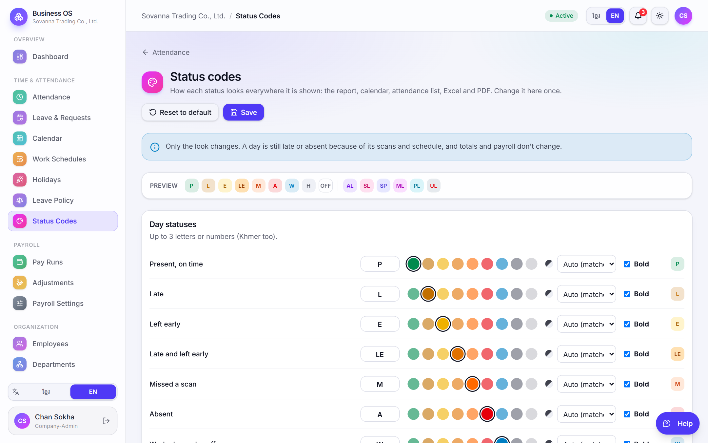
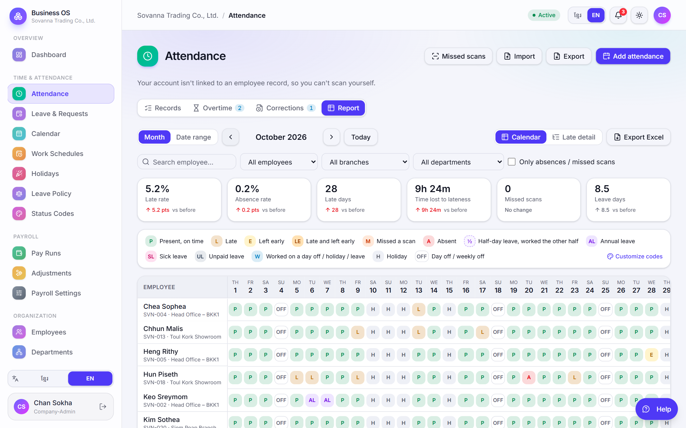
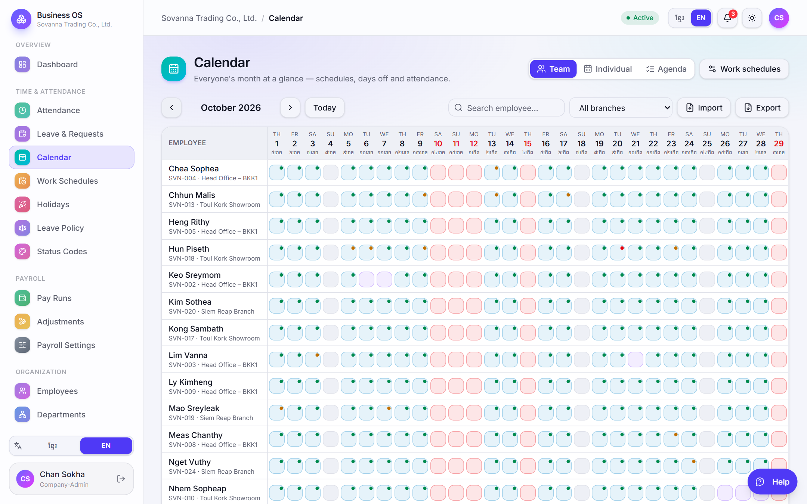
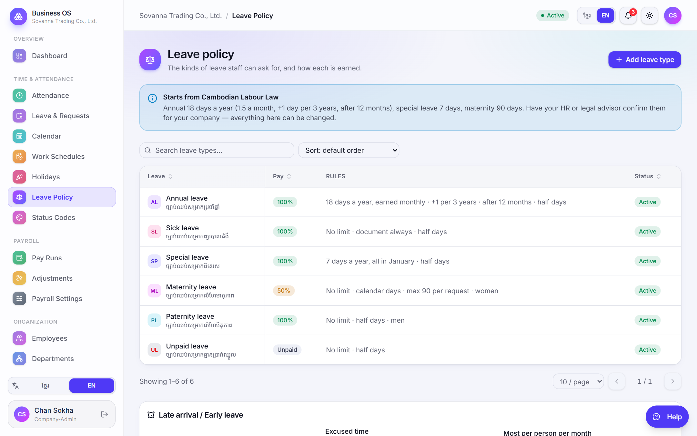
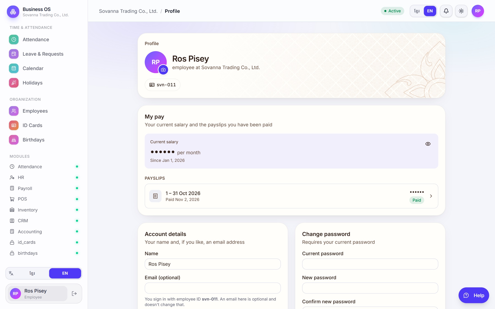
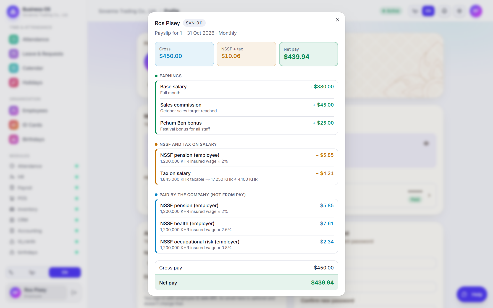
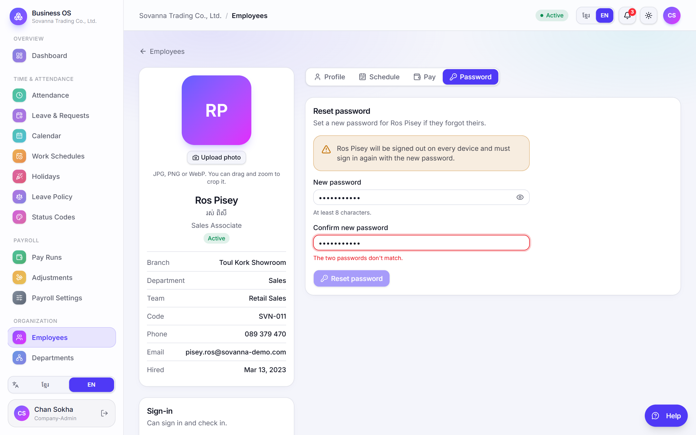

One place to set how every attendance status looks, a personal pay page for every staff member, and a way for admins to reset a forgotten password.
Released November 2026 · Screenshots from the demo company "Sovanna Trading Co., Ltd."
1
Status codes in one place
Admins · HR
Every day status — present, late, left early, missed a scan, absent, holiday, day off and each leave type — now has a short code and a colour that you choose once. The attendance report, the calendar, the attendance list, the Excel file and the PDF all follow it automatically.
How to use it
Open Attendance → Status Codes in the sidebar.
For each status, type a code (up to 3 letters or numbers — Khmer works too) and pick a colour.
Optionally choose a text colour and whether the code is bold. The chip on the right shows the result.
Check the Preview row at the top, then press Save. Reset to default brings back the original look.

Attendance → Status Codes. Each row sets one status; the preview at the top shows all of them together.
ℹ️
Only the look changes. A day is still late or absent because of its scans and work schedule. Totals and payroll are not affected.
Where you see it
The monthly attendance report uses the same codes and colours, with a legend above the grid and a Customize codes link that opens the page above.

Attendance → Report. Each cell shows the day's code in the colour set on the Status Codes page.

Calendar → Team. Days use the same colours, so the calendar and the report always match.
2
Leave codes and colours
Admins · HR
Each leave type now has its own code — for example AL for annual leave, SL for sick leave, UL for unpaid leave — so a leave day in the report says exactly which leave it was.
Codes and colours are set on the Status Codes page, under the leave types section.
The Leave Policy page shows each type's code chip next to its name.
A leave code can't reuse a day-status code: "M" can't mean both missed a scan and maternity leave.

Leave Policy. Every leave type shows its code chip.
3
My Pay for every staff member
All staff
Staff can now see their own salary and payslips without asking HR. It appears on their Profile page when the Payroll module is turned on.
How to use it
Open Profile (click your name at the bottom of the sidebar).
Under My pay, amounts start hidden. Press the eye button to show them.
Click a payslip to see every line: earnings, NSSF and tax, and what the company paid on top.

Profile → My pay. Salary and amounts stay hidden until the eye button is pressed.

An opened payslip: gross, deductions and net pay, with the calculation shown under each line.
🔒
Private by design. Everyone sees only their own pay, and only from pay runs that are approved or paid. No permission needs to be given.
4
Admins can reset an employee's password
Admins · HR
When an employee forgets their password, an admin can now set a new one from the employee's page. Before this, the only way out was to remove the login and create a new one.
How to use it
Open Employees and click the employee.
Open the Password tab.
Type the new password (at least 8 characters) and type it again to confirm. The eye button shows what you typed.
Press Reset password, then give the employee the new password in person or by phone.

Employees → employee → Password. The two fields must match before the button can be pressed.
⚠️
The employee is signed out everywhere. Their phone and any other device must sign in again with the new password.
Who can do it
Situation
Allowed?
You have permission to manage employees
Yes
The employee has no login yet
No — use Create login first
Your own account
No — change it from Profile → Change password
Resetting a company admin's password
Only another company admin
Every reset is recorded in the Audit log (who did it and when — never the password).
5
Leave columns in the Excel export
Admins · HR · Payroll
The attendance Excel file now has three extra columns for leave days, so payroll can work straight from the file:
Leave code — the leave type's code, e.g. AL or SL.
Leave colour — the colour set for that leave.
Leave pay % — how much of the day is paid. Unpaid leave shows 0.
Cells in the Excel and PDF files use the same colours as the screen.
6
Smaller improvements
Retry on slow loading. If a page takes too long to load (for example on a weak connection), a Try again button appears instead of an endless spinner.
The attendance day popup, attendance list and dashboard use the new status chips.
All new screens and messages are available in Khmer and English.